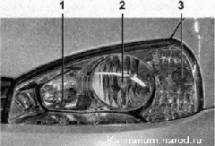

Освещение, световая и звуковая сигнализацияНа автомобиль установлены две блок-фары головного света с галогенными лампами дальнего и ближнего света. Для регулировки направления пучка ближнего света на каждой блок-фаре имеются два регулировочных винта. Они позволяют изменять направление светового пучка в горизонтальной и вертикальной плоскостях. Фары укомплектованы электрическим корректором, позволяющим изменять направление светового пучка в вертикальной плоскости из салона в соответствии с загрузкой автомобиля. Блок-фара: 1 - секция дальнего и габаритного света; 2 — секция ближнего света; 3 — секция переднего указателя поворота В наружные стороны блок-фар встроены передние указатели поворота с лампами оранжевого света. Сигналы поворота дублируются боковыми указателями поворота (повторителями), установленными на передних крыльях. Часть автомобилей комплектуется противотуманными фарами, которые крепятся в отверстиях переднего бампера. На автомобиль установлены комбинированные задние фонари. Каждый фонарь состоит из четырех секций: указателя поворота, сигнала торможения, света заднего хода, габаритного/противотуманного света. В задний бампер встроены светоотражатели красного цвета. Задние фонари: 1 — дополнительный фонарь сигнала торможения; 2 — секция сигнала торможения; 3 — секция света заднего хода; 4 — секция заднего указателя поворота; 5 секция габаритного и противотуманного света В передней части потолка установлен плафон освещения салона. Он включается автоматически при открывании любой из боковых дверей или принудительно с помощью выключателя на плафоне. В плафон встроены два фонаря индивидуальной подсветки для водителя и пассажира на переднем сиденье. Задний номерной знак освещают два фонаря. Лампа освещения вещевого ящика загорается при включенном наружном освещении и открытой крышке вещевого ящика. На автомобиле установлен один звуковой сигнал вибрационного типа. |